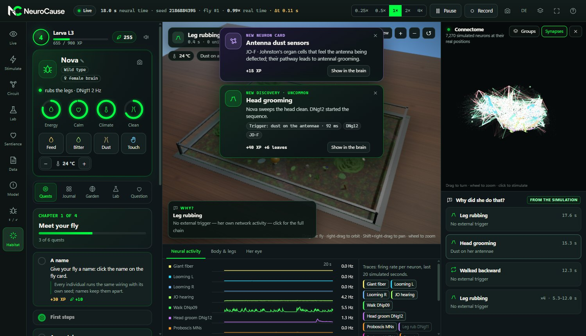
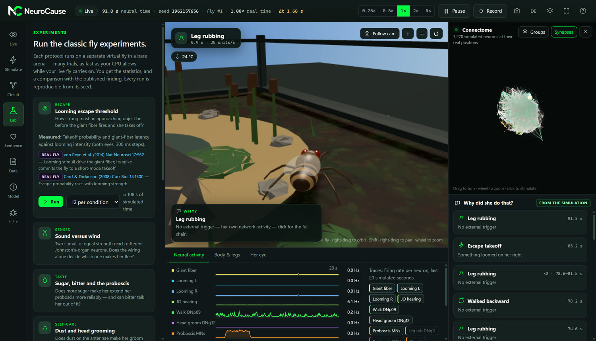
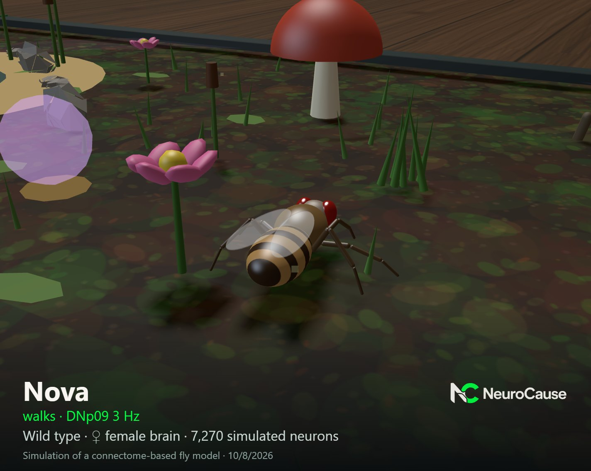
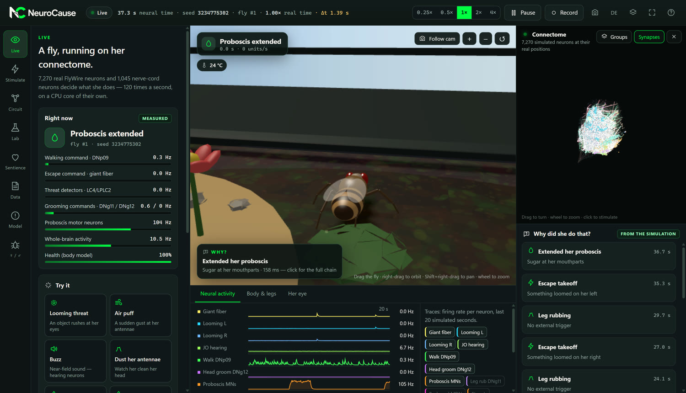

New · the Habitat
Play
Look after a fly whose every move comes from its connectome. Feed it, discover its behaviours and the neurons behind them, cross fly lines, shape its terrarium.
NeuroCause runs nervous systems on their measured wiring. Look after the fly in a game, or run the experiments a lab would: every move comes from 7,270 simulated neurons on a published connectome, and every result shows the neurons behind it.
Film: the simulated fly brain, every neuron at its measured FlyWire position. Each flash is a spike from a real model run; midway, a looming stimulus makes the giant fiber fire. Model activity, not a recording from a fly.
Both run the same model in the same application, on your own device. The game makes the science tangible; the laboratory makes it testable.

Look after a fly whose every move comes from its connectome. Feed it, discover its behaviours and the neurons behind them, cross fly lines, shape its terrarium.

Run ten assays from the fly literature, silence or activate identified cells, record every rate, and trace each behaviour to the neurons that decided it. Every result reproduces from its seed.
In the Habitat workspace the simulated fly becomes yours to look after. Feed it, and its taste circuit decides whether it drinks. Every behaviour you see for the first time becomes a card with the neurons that decided it and their measured wiring. Cross fly lines as real fly labs do, raise offspring whose genotype actually runs in the model, shape the terrarium, take photos, and work through the eight sentience criteria. Care values, leaves and ranks are game rules and say so; everything the fly does is the simulation.

Cross GAL4 driver lines with UAS effectors. Silence the giant fiber and the fly no longer escapes; switch on grooming with red light; start a moonwalk with warmth.
Place ferns, flowers, stones and logs. They are part of the fly's world: its eye sees them and solid pieces are in the way.
The proboscis test with three sugar concentrations, a looming shadow, dust on the antennae, warmth and the hot cells, with daily field notes.
Investigate the eight sentience criteria in your own fly and see what the model contains, and what it does not. The answer is a map, not a score.
Play the Habitat now Free, in your browser. Your progress stays on your device.
A connectome records which neuron connects to which, and how strongly. It does not record how the cells behave in time. NeuroCause keeps the two apart: the wiring is used exactly as published, and whatever the connectome does not contain is a documented model component, labelled as such wherever its results are shown.
Measured
Neurons, their positions, cell types and synaptic connections come from peer-reviewed connectome releases, with their licences and a SHA-256 fingerprint of every file. Nothing is tuned by hand to make a behaviour look right.
Modelled
Spiking neuron dynamics, sensory transduction, a jointed body and its contact with the ground. Each component is documented with its parameters, its sources and its limits.
Traced
When the model acts, NeuroCause shows which input changed, which sensory neurons it reached and which synapses drove the deciding neurons — from recorded spikes, not from a story told afterwards.
An assay in NeuroCause is a protocol, a model and a statistic. It perturbs the model the way a wet-lab experiment would, measures the outcome over many seeded trials, compares it with the published finding, and traces what caused it.
Silence or activate any identified cell type, as with a genetic effector — and measure which cells a behaviour actually needs.
Scale excitatory, inhibitory or modulatory synapses and read out dose–response curves. A test of circuit dependence, not a drug model.
Looming, wind, sound, temperature, taste and touch reach only the receptor neurons that transduce them, so each stimulus is specific by wiring.
Classic findings re-run as controlled experiments, with exact tests, confidence intervals and the published result side by side — including the ones not reproduced.
For every action: the triggering input, the receptors it reached and the synaptic drive onto the deciding neurons, recorded from the run itself.
Every run records its seeds, model version and data fingerprints and exports as CSV. Results reproduce exactly and can be compared across model variants.
The assays do not depend on the animal. A model enters NeuroCause when its wiring is published and its behaviour can be tested; it is ready when it passes its benchmarks. The fruit fly comes first because it is both completely mapped and central to biomedical research.

Available · release 2.4
7,270 brain neurons of an adult female (FlyWire FAFB v783) and 1,045 nerve-cord neurons of an adult male (MaleCNS v1.0), joined by a modelled interface between identified descending cell types, in closed loop with a modelled body in a terrarium. She walks, grooms, tastes, sleeps and escapes; ten guided assays ship with their literature.
Available · release 2.4
A male fly runs on the brain and nerve cord of one MaleCNS v1.0 animal, a female fly on those of one BANC v888 animal: no join between two specimens, the cord’s descending and ascending cells are the brain’s own. Each carries documented calibrations; the original model stays the reference for the published benchmarks.
In preparation
The male nerve cord (MANC) and the male optic lobe are in the anatomy explorer, each kept as its own specimen and never wired into another. The hemibrain and a larval connectome follow once their redistribution terms are confirmed. A cell type found in several animals lets an assay ask whether a result depends on the individual whose wiring was measured.
Vision
As further whole-nervous-system connectomes are published, they can join the same assays, statistics and provenance. Which ones, and when, depends on the data — we announce models when they exist, not before.
Our public working paper traces every layer from reconstructed synapses to modelled dynamics, shows negative results and sets out what must be tested before stronger biological claims can be made.
Working paper · version 0.3
28 September 2026
Not peer reviewed
Six short films of the BANC connectome — a complete brain-and-cord wiring diagram of a single female fly, and the dataset of our next fly model. Select one to watch it with its original soundtrack.
Connectome: BANC v888, Bates, Phelps, Kim et al., Nature 656 (2026), doi:10.1038/s41586-026-10735-w; data doi:10.7910/DVN/7WTH1N, CC BY 4.0. Visualisation by NeuroCause: a selection of mapped cells and contact links; light pulses illustrate model activity and are not recorded neural firing. Original soundtrack.
Complete connectomes of the adult fly brain and of its whole central nervous system have been published within the last two years. For the first time, an entire animal nervous system can be simulated on its measured wiring. NeuroCause follows that path step by step: one specimen, cell-type physiology, a calibrated body, validated behaviour — and then the next nervous system.
Whether a simulated nervous system could ever have experiences is an open scientific question. We treat it as one: with published criteria, testable components and no claims beyond the evidence.
The application with the fly model, free and without advertising, for Windows 10 and 11 (64-bit) and for Android phones and tablets. Because the FlyWire brain data carries a non-commercial licence, it is and remains free of charge. The software terms apply to every download; both applications ask you to accept them before they start.
Release 2.5.0 as a ZIP of about 183 MB. Unzip it anywhere and start NeuroCause.exe; nothing is installed
and nothing connects to the internet. Settings from earlier versions carry over.
Release 2.5.0 for Android 7.0 or newer with OpenGL ES 3.0, about 28 MB. Open the file on your phone or tablet; Android asks once to allow installs from your browser or file manager. The app runs entirely on the device and connects to nothing.
Code, data pipeline, tests and the Windows build script, public on GitHub under a non-commercial licence.
People who support NeuroCause may be invited to test new versions before their public release. A one-time contribution of any amount, through Stripe, without an account. How it works
NeuroCause is a research and teaching tool. It is not validated for medical, veterinary, regulatory or safety decisions, and its pharmacology settings do not predict the effect of any real substance. Using it in research or a course? Write to us.
NeuroCause is an independent in-silico laboratory: it runs models of nervous systems on connectomes published by research institutions and tests them with assays anyone can repeat. It is free, open to everyone and carries no advertising. Your contribution supports the computing and careful validation behind each release.
Set your amount in CHF on Stripe’s secure checkout. There is no account to create here and the software stays free whether or not you contribute.
Choose an amount on StripeYou will leave NeuroCause for Stripe before entering payment details. No payment is taken on this page.
Try what comes next, first. People who contribute may be invited to test new NeuroCause versions before their public release, by email to the address given at checkout. How it works
NeuroCause is an independent, non-commercial project, not a registered charity. Donations are voluntary gifts to the project as a whole and are not tax-deductible. Terms · Privacy
NeuroCause uses public research data under its original licences, with attribution. SHA-256 fingerprints of every data file are recorded in each run and listed on the Evidence page.
| Dataset | Specimen | Used for | Licence |
|---|---|---|---|
| FlyWire FAFB v783Dorkenwald et al. 2024; Schlegel et al. 2024, Nature | adult female, brain | brain circuit of the fly model | CC BY-NC 4.0 |
| MaleCNS v1.0Berg et al. 2025, bioRxiv; FlyEM, HHMI Janelia | adult male, brain + nerve cord | locomotor nerve cord of the fly model; anatomy explorer | CC BY 4.0 |
| BANC v888Bates et al. 2026, Nature | adult female, brain + nerve cord | anatomy explorer and films; the single-animal model in development | CC BY 4.0 |